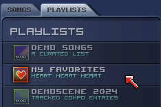
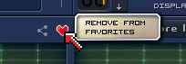

a special type of playlist is your favorites list.

You can add/remove songs to it by clicking the heart icon on the right;

Your favorites list is stored in your browser's local storage.
If you want to save it to a file, you can save it as a playlist.